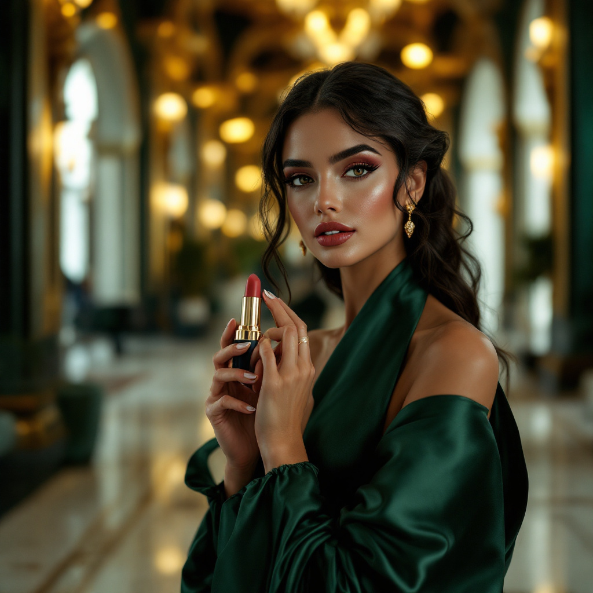

Haute Parfumerie Review
The world of luxury perfumery is replete with exquisite creations, and one such masterpiece is the house of sillage lipstick case, a true embodiment of elegance and refinement. As you delve into the realm of haute parfumerie, you may find yourself wondering what sets this lipstick case apart from others, and how it can elevate your fragrance experience.
However, to truly appreciate the house of sillage lipstick case, it's essential to understand the craftsmanship and attention to detail that goes into creating such a masterpiece. Furthermore, the unique blend of fragrance notes and the luxurious packaging make it a must-have for any perfume connoisseur. Therefore, in this article, we will explore the key features, benefits, and usage of the house of sillage lipstick case, providing you with a comprehensive understanding of this luxury product.
The house of sillage lipstick case is renowned for its exceptional sillage, a term used to describe the lingering scent of a perfume, and its longevity, which ensures that the fragrance lasts throughout the day. Additionally, the unique fragrance composition and craftsmanship of this lipstick case make it a standout in the world of luxury perfumery.
The house of sillage lipstick case is ideal for individuals who appreciate luxury perfumery and are looking for a unique and elegant fragrance experience. Additionally, those who value high-quality ingredients and exceptional craftsmanship will appreciate the attention to detail that goes into creating this masterpiece. However, it's essential to note that this product may not be suitable for everyone, particularly those with sensitive skin or allergies.
The house of sillage lipstick case features a complex fragrance composition that is both elegant and sophisticated. Furthermore, the craftsmanship that goes into creating this lipstick case is exceptional, with attention to detail and a commitment to excellence that is unparalleled in the world of luxury perfumery.
| Ingredient / Feature | Scent Role / Skin Benefit |
|---|---|
| Bergamot | Top note, provides an uplifting and refreshing scent |
| Jasmine | Heart note, adds a touch of elegance and sophistication |
| Vanilla | Base note, provides a rich and sensual dry down |
| Musk | Base note, adds a touch of sensuality and allure |
Bergamot is a key ingredient in the house of sillage lipstick case, providing an uplifting and refreshing scent that is both elegant and sophisticated. Additionally, bergamot has been shown to have a positive impact on mood, reducing stress and anxiety. However, it's essential to note that bergamot can be phototoxic, and users should exercise caution when applying it to the skin.
According to a study published in the Journal of Essential Oil Research, bergamot has been shown to have a significant impact on reducing anxiety and stress, making it an ideal ingredient for those looking to promote relaxation and well-being.
To get the most out of the house of sillage lipstick case, it's essential to use it correctly. Additionally, understanding the fragrance composition and craftsmanship that goes into creating this masterpiece can help you appreciate its unique qualities and benefits.
One common mistake to avoid when using the house of sillage lipstick case is over-application, which can lead to a overwhelming scent that may be off-putting to others. Additionally, failing to store the lipstick case properly can lead to degradation of the fragrance, reducing its potency and longevity. However, by following the tips outlined above, you can ensure that you get the most out of this luxury product.
When using the house of sillage lipstick case, it's essential to patch test the fragrance on a small area of skin before applying it to pulse points, to ensure that you don't have any sensitivity or allergic reactions.
The house of sillage lipstick case is a luxury perfume product that features a unique fragrance composition and exceptional craftsmanship, making it a must-have for any perfume connoisseur. Additionally, the lipstick case is crafted from high-quality materials, including gold and silver, and features intricate designs that reflect the brand's attention to detail and commitment to excellence.
To get the most out of the house of sillage lipstick case, apply the fragrance to pulse points, such as the wrists and neck, and use it in moderation to avoid over-application. Additionally, store the lipstick case in a cool, dry place, away from direct sunlight, to preserve the fragrance and prevent degradation.
The house of sillage lipstick case may not be suitable for sensitive skin, as it contains bergamot, which can be phototoxic. However, patch testing the fragrance on a small area of skin before applying it to pulse points can help minimize the risk of sensitivity or allergic reactions.
Yes, the house of sillage lipstick case can be layered with other fragrances to create a unique and complex scent profile. However, it's essential to use caution when layering fragrances, as over-application can lead to a overwhelming scent that may be off-putting to others.
The house of sillage lipstick case is a true masterpiece of luxury perfumery, featuring a unique fragrance composition and exceptional craftsmanship. Additionally, the long-lasting formula and luxurious packaging make it a must-have for any perfume connoisseur. However, the high price tag and limited availability may be a deterrent for some consumers. Nevertheless, for those who appreciate luxury perfumery and are looking for a unique and elegant fragrance experience, the house of sillage lipstick case is definitely worth considering.
In conclusion, the house of sillage lipstick case is a luxury perfume product that is sure to impress even the most discerning perfume connoisseurs. With its unique fragrance composition, exceptional craftsmanship, and luxurious packaging, it's a must-have for anyone looking to elevate their fragrance experience. So why not try the house of sillage lipstick case today?